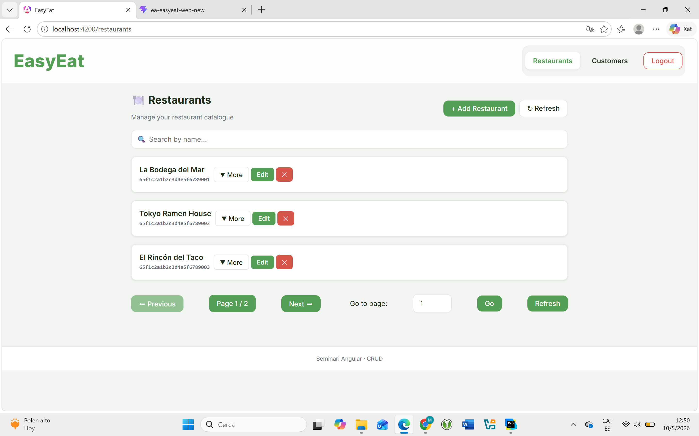
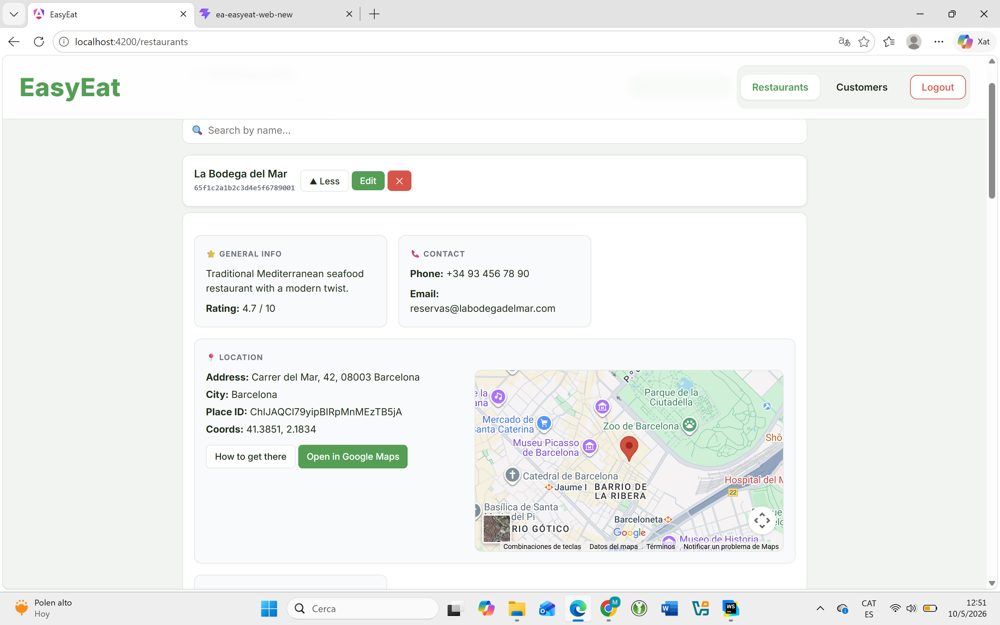
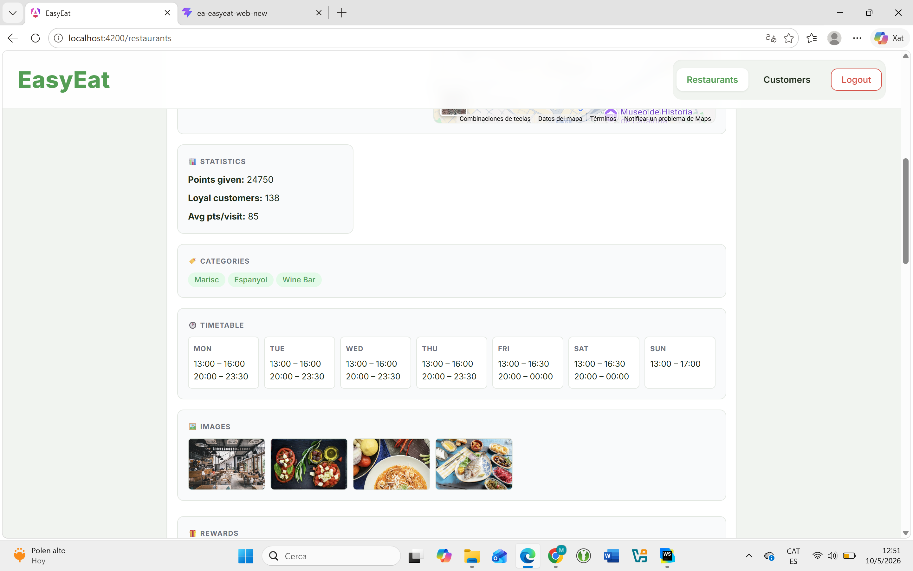
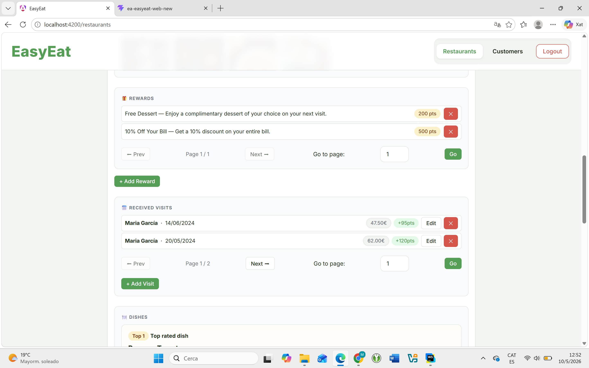
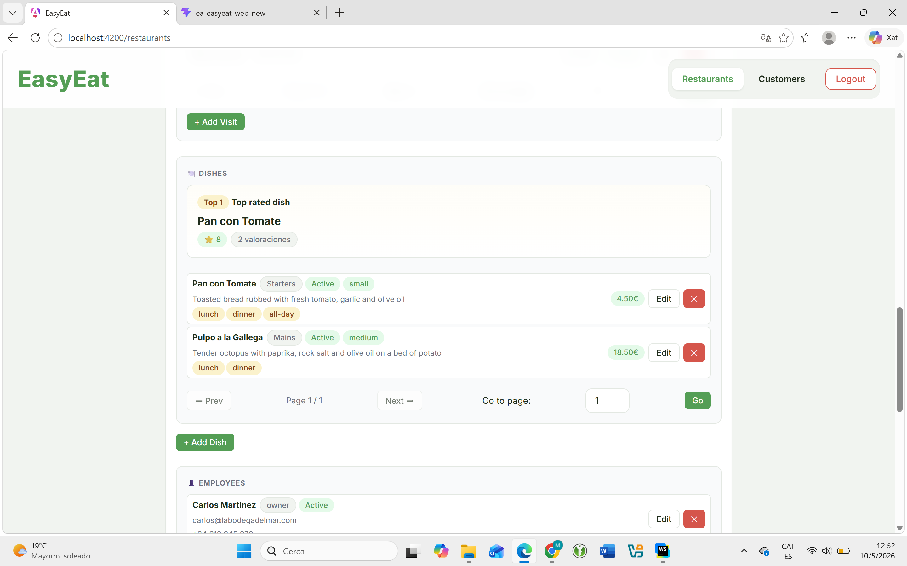
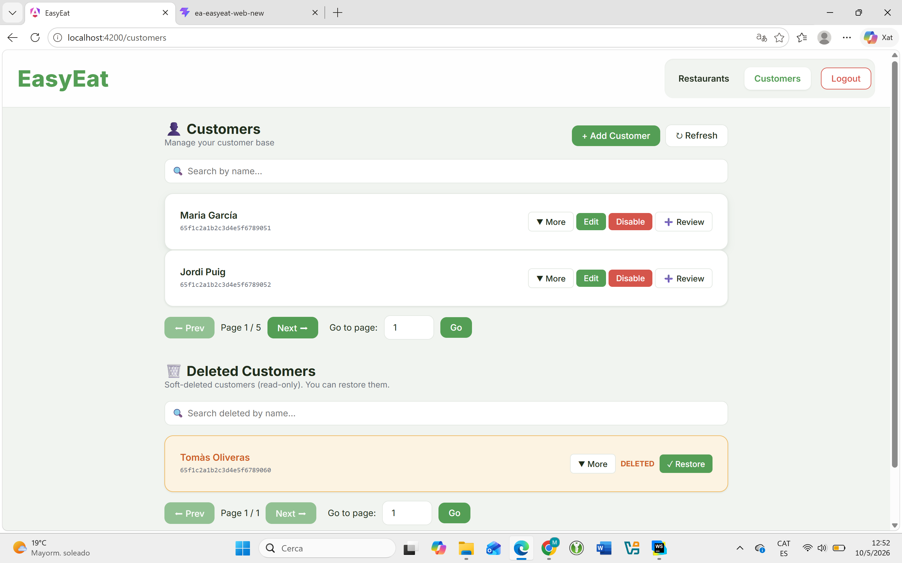
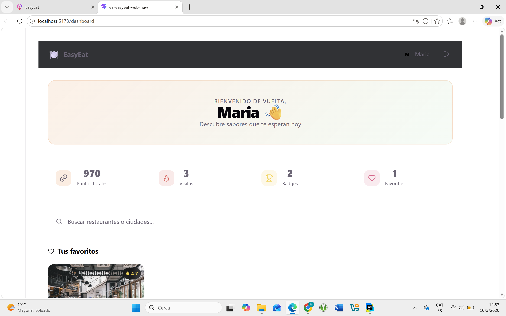
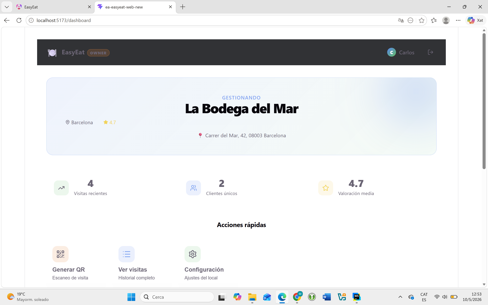
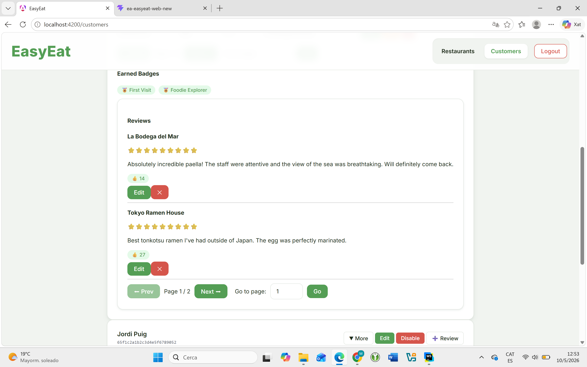

En les versions anteriors, EasyEat era una base de dades amb una interfície. Funcionava. Però era estàtic, limitat, unidimensional.
En el Capítol 3, tot canvia. El sistema es converteix en un ecosistema complet: tres interfícies, tres tipus d'usuaris, un únic nucli de dades que ho vertebra tot.
L'ecosistema EasyEat
El Backoffice era funcional. Ara és professional. La mateixa base Angular, però amb una capa de UX que transforma l'experiència de l'administrador.
Ja no és una llista de text pla. Cada restaurant s'expandeix en un panell ric: ubicació en mapa, horaris, categories, estadístiques, plats, empleats i recompenses, tot paginat i controlat.


El panell de restaurant ja no mostra un nom i un ID. Mostra estadístiques reals: punts distribuïts, clients fidels, valoració mitjana. Afegeix categories visuals, horari setmanal complet i una galeria d'imatges del local.

Es poden veure totes les recompenses i visites d'un restaurant, amb paginació independent per a cada secció.
Les visites mostren data, import gastat i punts obtinguts. Les recompenses, el llindar i les opcions de bescanvi.

El backoffice incorpora gestió de la carta completa: categories, descripció, preu, serveis i el plat millor valorat destacat automàticament.
La gestió d'empleats inclou rols, estat i dades de contacte, tot amb paginació i accions directes.

La secció de Customers revela el poder del sistema dual d'eliminació. Els clients actius apareixen amb les accions habituals. Els clients amb Soft Delete apareixen en una secció separada, en taronja, recuperables amb un clic.

Fins ara el sistema era obert. Tothom podia accedir a tot. En el Capítol 3, el sistema adquireix consciència de qui és qui.
S'incorpora autenticació amb JWT i un sistema de control d'accés basat en rols (RBAC). Cada acció, cada ruta, cada pantalla té un propietari definit.
Per primer cop, els clients finals tenen la seva pròpia interfície. Una Web App construïda en React que posa el sistema de fidelització a l'abast de tothom.
El dashboard de client és un espai personal de descoberta: punts acumulats, visites, badges guanyats i restaurants favorits. Un mirall de la seva relació amb l'ecosistema EasyEat.

Paral·lelament, el personal del restaurant rep la seva pròpia eina operativa. Una app React centrada en la gestió del local en temps real: visites recents, clients únics, valoració mitjana i accions ràpides.
L'empleat no necessita el Backoffice. Té tot el que necessita en el seu propi panell, adaptat al seu rol i al seu restaurant assignat.

El Backoffice també guanya profunditat en la vista de clients. Cada client mostra el seu historial complet de visites, els badges guanyats i totes les seves ressenyes, paginades i ordenables.

La diferència entre el sistema inicial i el sistema madur no és incremental. És estructural. No és la mateixa eina amb més botons. És un producte diferent, dissenyat per escalar.
- Sistema bàsic de gestió
- UI simple, sense profunditat
- Sense autenticació avançada
- Sense paginació
- Eliminació directa, irrecuperable
- Una sola interfície
- Sense context geogràfic
- Sense rols ni control d'accés
- Ecosistema escalable i complet
- UI optimitzada i professional
- JWT + autenticació segura
- Paginació a totes les entitats
- Soft Delete + Hard Delete + Restore
- Backoffice + 2 Web Apps React
- Google Maps integrat
- RBAC per admin, empleat i client
"El sistema deixa de ser
una eina.
Es converteix en
una plataforma."
Cada rol té la seva experiència. Cada dada té el seu control. Cada accés, protegit.